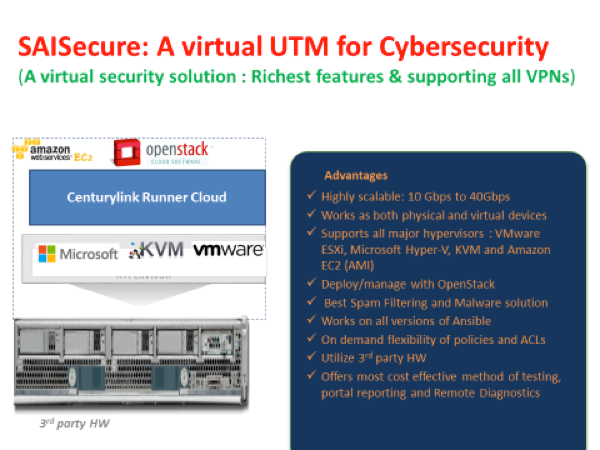
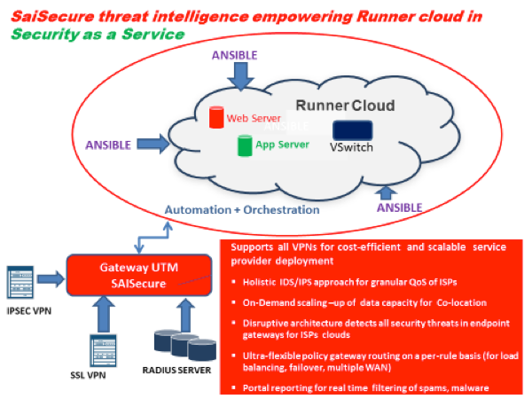
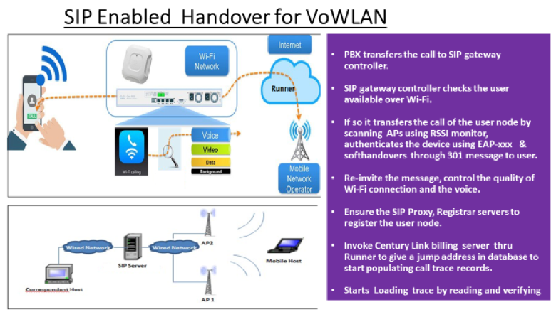
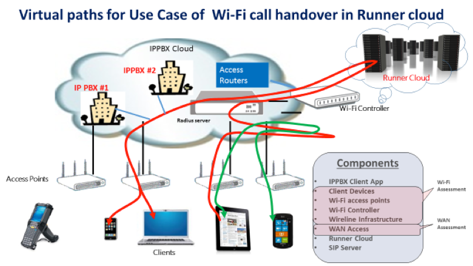
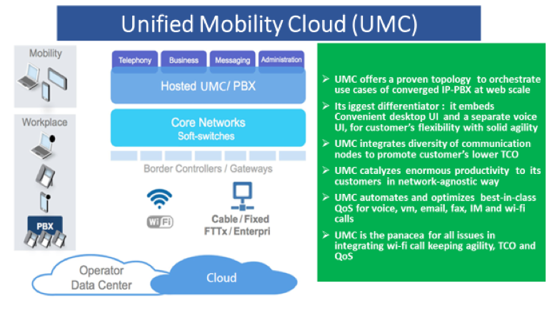
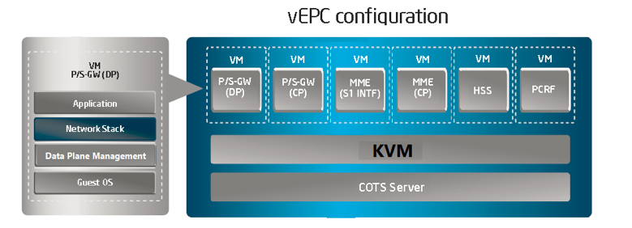
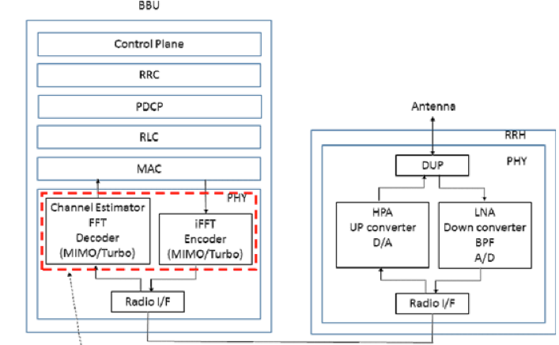

Cybersecurity is all about proactive and preemptive threat detection and control of risky behaviors leading to advanced persistent threats and other information security risks.
Implied or explicit risks to related assets, customer’s user experience and productivity loss further aggravates the magnitude of this menace to a safe infrastructure where we live, work and play. We address these threats through their risk mitigation framework solutions enabling customers to practice more than the saying “A stitch in time saves nine”
Cyber Security offers a complete virtual security solution to organizations with its virtual network security appliances (Next-Generation Firewalls/UTMs), virtual Cyber Central Console for centralized management, and Cyber View software for centralized logging and reporting.


With increasing mobile devices and apps every year, will have a direct impact on the flexibility, scalability and High availability of the resources.
To offer these capabilities the enterprise should move cloud services, the higher the services needed will have a greater demand for cloud services. Enterprise mobility and cloud computing are inextricably interwoven.
The combination of enterprise convergence to cloud computing is all set to radically improve the operational effectiveness.
As virtualization and the service-oriented architecture (SOA) permeate the enterprise, applications and services running on an agile, scalable infrastructure may make every enterprise a node in the cloud. One has only to look at the success of Facebook, Apple, Google and Amazon to see how this trend is developing.
CC can be deployed in Enterprise communication services which has SIP trunking.


Global Connectivity for Voice, Video and Data is being provided by service providers. The state of the art underlying technology elements like 3G, 4G/LTE, VoLTE, SRVCC, IMS and Wi-Fi technologies have now become an integral part of today’s various cloud topologies we use.
UMC can be deployed with different use cases.

vEPC, C-RAN in OpenStack Cloud virtual network solution suite, complied with 3GPP standards, provides all the EPC functions as virtual network functions (VNFs); vMME (Mobility Management Entity) and vS/P-GW (Serving and PDN gateway), vHSS(Home Subscriber Server)and vPCRF (Policy Control and Charging Rules Function). vS/P-GW which can integrate vSGSN (Serving GPRS Support Node) and C-RAN(Cloud – Radio Access Network) functionalities, can be deployed as totally separated vS-GW and vP-GW or integrated vS/P-GW with collapsed interface.
vEPC, C-RAN runs on OpenStack Cloud platform. It runs on industry standard and open sourced hypervisor such as KVM, and fully aligned with the ETSI NFV recommendation as shown below.vEPC, C-RAN achieves carrier-grade quality in the VNF application layer with its resiliency inherited from decades of network deployment experience, which is augmented with new virtualization and cloud technologies.
Apart from the VNF appliances, OpenStack Cloud also provides add-ons and plug-ins to open NFVI and VIM platform and sophisticated Management and Network Orchestration solutions, which provide end-to-end control.
The Management and Network Orchestration system contains service orchestrator, VNF manager and VIM (Virtual Infrastructure Manager) which supports OpenStack.

Additionally, OpenStack Cloud provides plug-in to OpenStack agents to realize a quick hardware failure detection and failover trigger for the application and management and orchestration system. It enables vEPC application VM to initiate failover in real time and without service interruption. Another plug-in provides capabilities to collect hardware architecture information considering NUMA and CPU pinning, virtual network status and physical machine resource availability so that VMs can be allocated to appropriate physical environments to deliver performance stability and make optimal use of hardware resources.
The plug-ins are the result of rich and deep knowledge that OpenStack experienced both in commercial telecom network and IT domain for decades.
Within a physical BS virtualising multiple logical RAN nodes from different mobile network systems, the processing resources should be dynamically allocated to a higher load logical RAN node, so that real-time scheduling and strict processing delay and jitter requirements are met. BBU resources in C-RAN BBU pool are also required to scale according to the whole load of BBU pool. These might require northbound interface to virtualisation orchestrator in order to manage life-cycle event of virtualised processing resources.

Inter-connection within virtualized BBU pool shall have high bandwidth and low latency switching function with necessary data formats and protocols to inter-connect among multiple BBUs.
With this switching function, BBU pool can realize the processing load balancing.